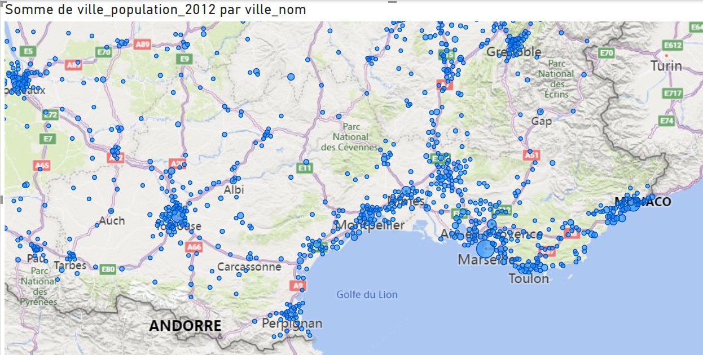

Retour
3/ Exercice export visuel des données
A l'aide de PowerBi, créer un rapport visuel des données de la base de données

- Connecter BI a MY SQL
- Créer une connexion avec MySQL
- Créez un nouveau rapport Sélectionnez Base de données MySQL
- Serveur : Saisissez localhost ou 127.0.0.1.
Base de données : "nomdevotrebase"